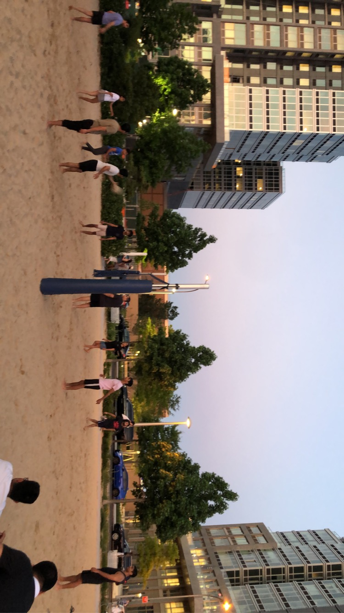

Life on the Rooftop Court

One of the biggest adjustments for me was learning how to play on a sand court rather than a traditional indoor court. It took some time to get used to the different playing conditions, especially moving and jumping in the sand. When we first started playing, we usually played 8-on-8 because most of us were still learning the game and figuring out our strengths. As we became more comfortable and improved our skills, we gradually transitioned to 4-on-4, which challenged me to become a more versatile player and take on different positions. Being one of the taller players, I was often placed as a setter, although I quickly learned that height did not necessarily translate into setting skills 😅 I found that I enjoyed playing as an outside hitter the most, as I liked being able to read the ball, anticipate where it was going, and adjust my approach to make a strong hit. Playing 4-on-4 pushed me to become more aware of the court, communicate with my teammates, and develop skills beyond just hitting the ball. It also made the experience more rewarding as I could see my progress over time.
What our 3 hours really looked like
- We started to warm up as peopel started to come in
- Picked captains and started to divide everyone into teams
- 2 of the teams began to play, while the other team practiced on the side
- Winner plays the third team, and water break!!
- All just catching up and watching sunset before the last game
- One last winner stays on game before heading home
How (I think) My Skills Grew
Here's how I'd rate my own skills (out of 10) before I started playing on the rooftop compared to now.